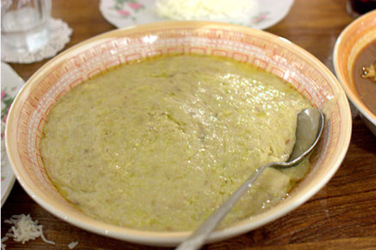
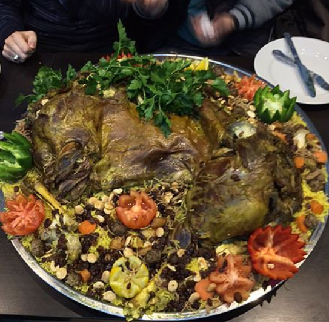
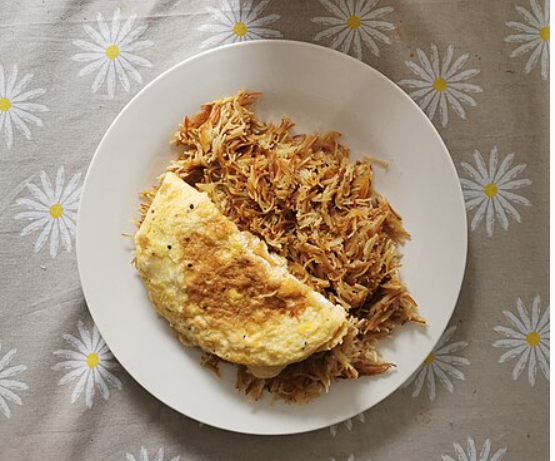

Harees
Harees, jareesh (Arabic: هريس), boko boko, or harisa (Armenian: հարիսա, romanized: harisa) is a dish of
boiled, cracked,
or coarsely-ground cracked wheat or bulgur, mixed with meat and seasoned.[1] Its consistency varies
between a porridge
and a gruel. Harees is a popular dish known throughout Armenia where it is served on Easter day, and the
Arab world,
where it is commonly eaten in Arab states of the Persian Gulf in the month of Ramadan, and in Iraq,
Lebanon and Bahrain
during Ashura by Shia Muslims.

Quzi
Quzi (Arabic: قوزي), also spelled as qoozi or ghoozi, is a popular rice-based dish and is considered one
of Iraq's
national dishes. It is served with very slowly cooked lamb, roasted nuts, and raisins served over
rice.[1] The dish was
introduced into Turkey by Syrian immigrants.[citation needed] The dish can also be found in some Arab
states of the
Persian Gulf.

Balaleet
Balaleet (Arabic: بلاليط) is a traditional sweet and savoury dish popular in the Eastern Arabian
cuisine.[1]
A popular breakfast choice, it traditionally consists of vermicelli sweetened with sugar, cardamom, rose
water and
saffron, and served with an overlying egg omelette.[2] It is sometimes served with sautéed onions or
potatoes.[3][4] The
dish is especially served during the Islamic holidays of Eid al-Fitr as the first meal of the day.[5]
